- 01 认知：ElasticSearch基础概念.md.html
- 02 认知：Elastic Stack生态和场景方案.md.html
- 03 安装：ElasticSearch和Kibana安装.md.html
- 04 入门：查询和聚合的基础使用.md.html
- 05 索引：索引管理详解.md.html
- 06 索引：索引模板(Index Template)详解.md.html
- 07 查询：DSL查询之复合查询详解.md.html
- 08 查询：DSL查询之全文搜索详解.md.html
- 09 查询：DSL查询之Term详解.md.html
- 10 聚合：聚合查询之Bucket聚合详解.md.html
- 11 聚合：聚合查询之Metric聚合详解.md.html
- 12 聚合：聚合查询之Pipline聚合详解.md.html
- 13 原理：从图解构筑对ES原理的初步认知.md.html
- 14 原理：ES原理知识点补充和整体结构.md.html
- 15 原理：ES原理之索引文档流程详解.md.html
- 16 原理：ES原理之读取文档流程详解.md.html
- 17 优化：ElasticSearch性能优化详解.md.html
- 18 大厂实践：腾讯万亿级 Elasticsearch 技术实践.md.html
- 19 资料：Awesome Elasticsearch.md.html
- 20 WrapperQuery.md.html
- 21 备份和迁移.md.html
07 查询：DSL查询之复合查询详解
复合查询引入
在(前文-多条件查询-bool)中，我们使用bool查询来组合多个查询条件。
比如之前介绍的语句
GET /bank/_search
{
"query": {
"bool": {
"must": [
{ "match": { "age": "40" } }
],
"must_not": [
{ "match": { "state": "ID" } }
]
}
}
}
这种查询就是本文要介绍的复合查询，并且bool查询只是复合查询一种。
bool query(布尔查询)
通过布尔逻辑将较小的查询组合成较大的查询。
概念
Bool查询语法有以下特点
- 子查询可以任意顺序出现
- 可以嵌套多个查询，包括bool查询
- 如果bool查询中没有must条件，should中必须至少满足一条才会返回结果。
bool查询包含四种操作符，分别是must,should,must_not,filter。他们均是一种数组，数组里面是对应的判断条件。
must： 必须匹配。贡献算分must_not：过滤子句，必须不能匹配，但不贡献算分should： 选择性匹配，至少满足一条。贡献算分filter： 过滤子句，必须匹配，但不贡献算分
一些例子
看下官方举例
- 例子1
POST _search
{
"query": {
"bool" : {
"must" : {
"term" : { "user.id" : "kimchy" }
},
"filter": {
"term" : { "tags" : "production" }
},
"must_not" : {
"range" : {
"age" : { "gte" : 10, "lte" : 20 }
}
},
"should" : [
{ "term" : { "tags" : "env1" } },
{ "term" : { "tags" : "deployed" } }
],
"minimum_should_match" : 1,
"boost" : 1.0
}
}
}
在filter元素下指定的查询对评分没有影响 , 评分返回为0。分数仅受已指定查询的影响。
- 例子2
GET _search
{
"query": {
"bool": {
"filter": {
"term": {
"status": "active"
}
}
}
}
}
这个例子查询查询为所有文档分配0分，因为没有指定评分查询。
- 例子3
GET _search
{
"query": {
"bool": {
"must": {
"match_all": {}
},
"filter": {
"term": {
"status": "active"
}
}
}
}
}
此bool查询具有match_all查询，该查询为所有文档指定1.0分。
- 例子4
GET /_search
{
"query": {
"bool": {
"should": [
{ "match": { "name.first": { "query": "shay", "_name": "first" } } },
{ "match": { "name.last": { "query": "banon", "_name": "last" } } }
],
"filter": {
"terms": {
"name.last": [ "banon", "kimchy" ],
"_name": "test"
}
}
}
}
}
每个query条件都可以有一个_name属性，用来追踪搜索出的数据到底match了哪个条件。
boosting query(提高查询)
不同于bool查询，bool查询中只要一个子查询条件不匹配那么搜索的数据就不会出现。而boosting query则是降低显示的权重/优先级（即score)。
概念
比如搜索逻辑是 name = 'apple' and type ='fruit'，对于只满足部分条件的数据，不是不显示，而是降低显示的优先级（即score)
例子
首先创建数据
POST /test-dsl-boosting/_bulk
{ "index": { "_id": 1 }}
{ "content":"Apple Mac" }
{ "index": { "_id": 2 }}
{ "content":"Apple Fruit" }
{ "index": { "_id": 3 }}
{ "content":"Apple employee like Apple Pie and Apple Juice" }
对匹配pie的做降级显示处理
GET /test-dsl-boosting/_search
{
"query": {
"boosting": {
"positive": {
"term": {
"content": "apple"
}
},
"negative": {
"term": {
"content": "pie"
}
},
"negative_boost": 0.5
}
}
}
执行结果如下
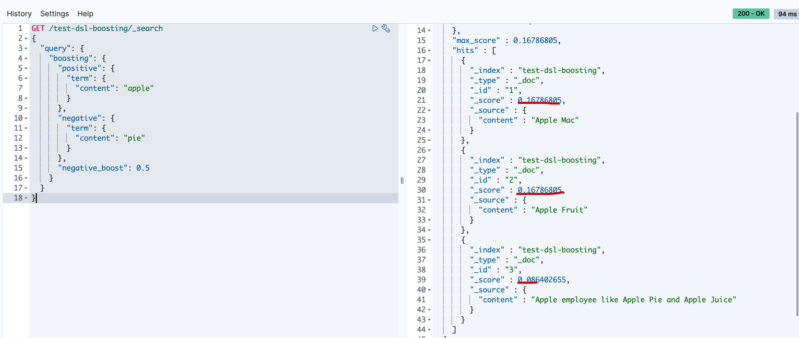
constant_score（固定分数查询）
查询某个条件时，固定的返回指定的score；显然当不需要计算score时，只需要filter条件即可，因为filter context忽略score。
例子
首先创建数据
POST /test-dsl-constant/_bulk
{ "index": { "_id": 1 }}
{ "content":"Apple Mac" }
{ "index": { "_id": 2 }}
{ "content":"Apple Fruit" }
查询apple
GET /test-dsl-constant/_search
{
"query": {
"constant_score": {
"filter": {
"term": { "content": "apple" }
},
"boost": 1.2
}
}
}
执行结果如下
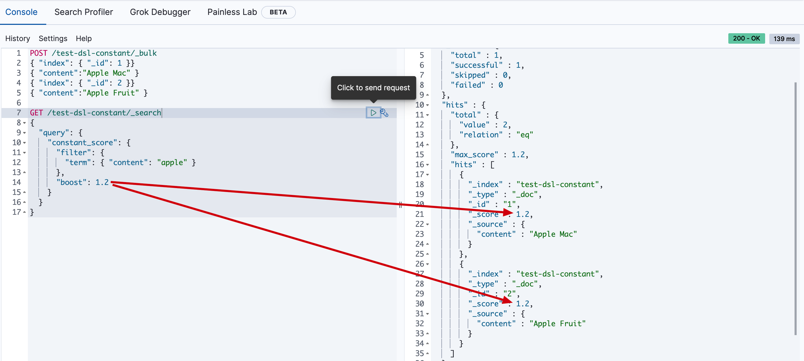
dis_max(最佳匹配查询）
分离最大化查询（Disjunction Max Query）指的是： 将任何与任一查询匹配的文档作为结果返回，但只将最佳匹配的评分作为查询的评分结果返回 。
例子
假设有个网站允许用户搜索博客的内容，以下面两篇博客内容文档为例：
POST /test-dsl-dis-max/_bulk
{ "index": { "_id": 1 }}
{"title": "Quick brown rabbits","body": "Brown rabbits are commonly seen."}
{ "index": { "_id": 2 }}
{"title": "Keeping pets healthy","body": "My quick brown fox eats rabbits on a regular basis."}
用户输入词组 “Brown fox” 然后点击搜索按钮。事先，我们并不知道用户的搜索项是会在 title 还是在 body 字段中被找到，但是，用户很有可能是想搜索相关的词组。用肉眼判断，文档 2 的匹配度更高，因为它同时包括要查找的两个词：
现在运行以下 bool 查询：
GET /test-dsl-dis-max/_search
{
"query": {
"bool": {
"should": [
{ "match": { "title": "Brown fox" }},
{ "match": { "body": "Brown fox" }}
]
}
}
}
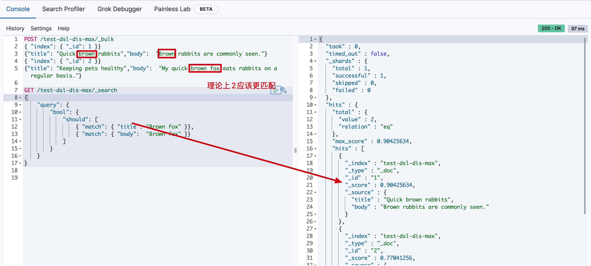
为了理解导致这样的原因，需要看下如何计算评分的
- should 条件的计算分数
GET /test-dsl-dis-max/_search
{
"query": {
"bool": {
"should": [
{ "match": { "title": "Brown fox" }},
{ "match": { "body": "Brown fox" }}
]
}
}
}
要计算上述分数，首先要计算match的分数
- 第一个match 中
brown的分数
doc 1 分数 = 0.6931471
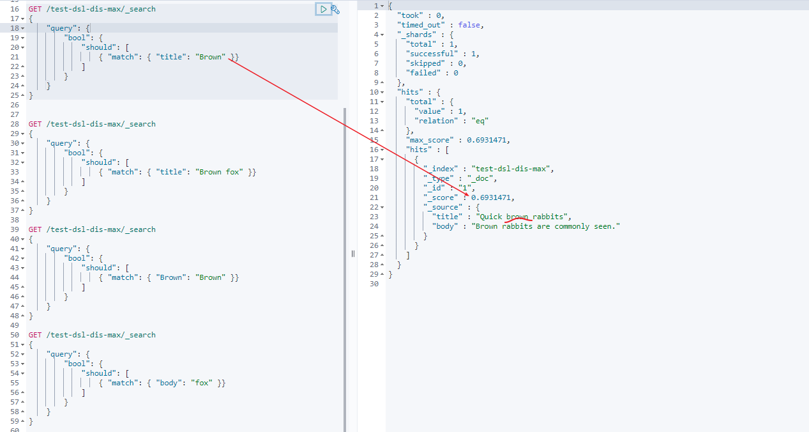
- title中没有fox，所以第一个match 中
brown fox 的分数 = brown分数 + 0 = 0.6931471
doc 1 分数 = 0.6931471 + 0 = 0.6931471
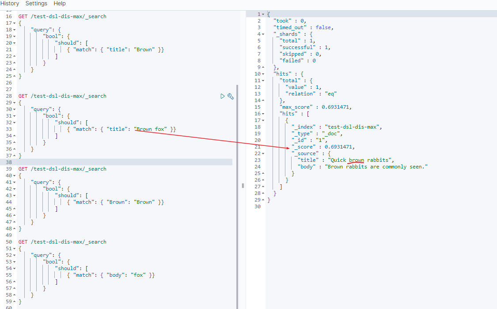
- 第二个 match 中
brown分数
doc 1 分数 = 0.21110919
doc 2 分数 = 0.160443
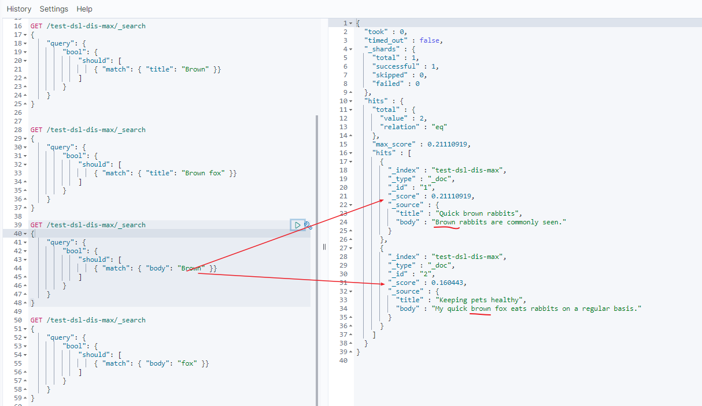
- 第二个 match 中
fox分数
doc 1 分数 = 0
doc 2 分数 = 0.60996956
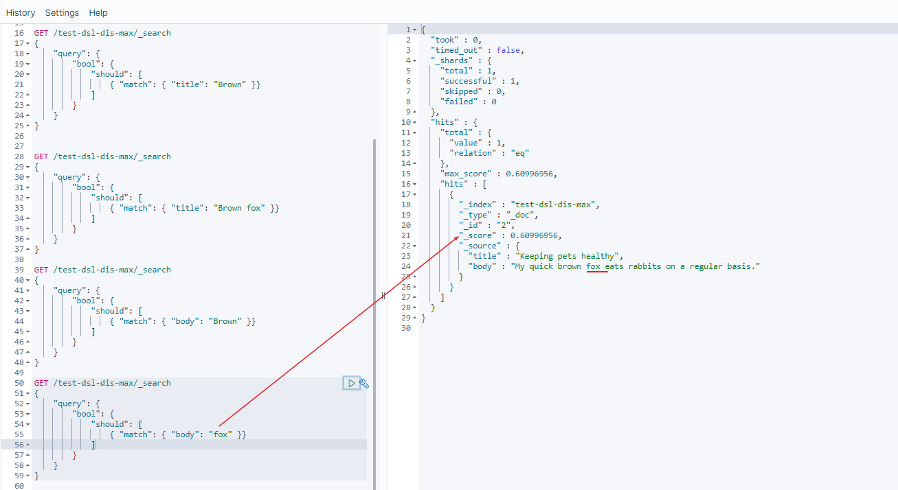
- 所以第二个 match 中
brown fox分数 = brown分数 + fox分数
doc 1 分数 = 0.21110919 + 0 = 0.21110919
doc 2 分数 = 0.160443 + 0.60996956 = 0.77041256
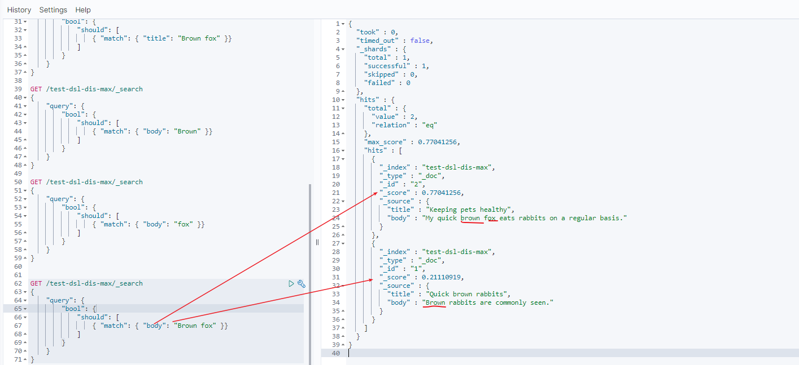
- 所以整个语句分数，
should分数 = 第一个match + 第二个match分数
doc 1 分数 = 0.6931471 + 0.21110919 = 0.90425634
doc 2 分数 = 0 + 0.77041256 = 0.77041256
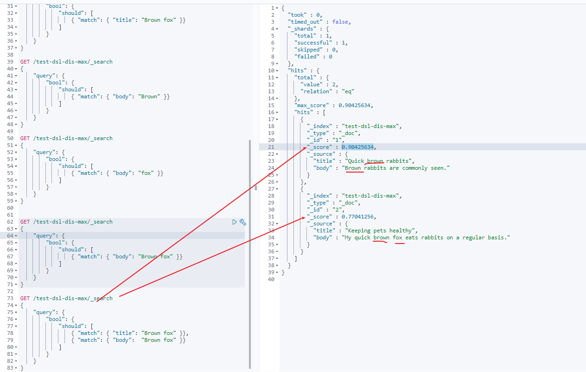
- 引入了dis_max
不使用 bool 查询，可以使用 dis_max 即分离 最大化查询（Disjunction Max Query） 。分离（Disjunction）的意思是 或（or） ，这与可以把结合（conjunction）理解成 与（and） 相对应。分离最大化查询（Disjunction Max Query）指的是： 将任何与任一查询匹配的文档作为结果返回，但只将最佳匹配的评分作为查询的评分结果返回 ：
GET /test-dsl-dis-max/_search
{
"query": {
"dis_max": {
"queries": [
{ "match": { "title": "Brown fox" }},
{ "match": { "body": "Brown fox" }}
],
"tie_breaker": 0
}
}
}
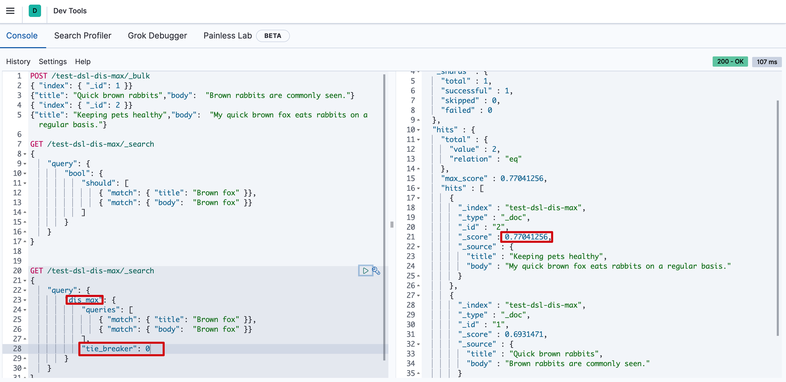
0.77041256怎么来的呢？ 下文给你解释它如何计算出来的。
- dis_max 条件的计算分数
分数 = 第一个匹配条件分数 + tie_breaker * 第二个匹配的条件的分数 ...
GET /test-dsl-dis-max/_search
{
"query": {
"dis_max": {
"queries": [
{ "match": { "title": "Brown fox" }},
{ "match": { "body": "Brown fox" }}
],
"tie_breaker": 0
}
}
}
doc 1 分数 = 0.6931471 + 0.21110919 * 0 = 0.6931471
doc 2 分数 = 0.77041256 = 0.77041256
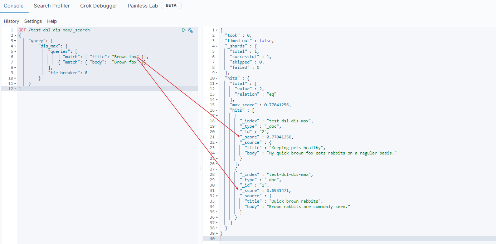
这样你就能理解通过dis_max将doc 2 置前了， 当然这里如果缺省tie_breaker字段的话默认就是0，你还可以设置它的比例（在0到1之间）来控制排名。（显然值为1时和should查询是一致的）
function_score(函数查询）
简而言之就是用自定义function的方式来计算_score。
可以ES有哪些自定义function呢？
script_score使用自定义的脚本来完全控制分值计算逻辑。如果你需要以上预定义函数之外的功能，可以根据需要通过脚本进行实现。weight对每份文档适用一个简单的提升，且该提升不会被归约：当weight为2时，结果为2 * _score。random_score使用一致性随机分值计算来对每个用户采用不同的结果排序方式，对相同用户仍然使用相同的排序方式。field_value_factor使用文档中某个字段的值来改变_score，比如将受欢迎程度或者投票数量考虑在内。衰减函数(Decay Function)-linear，exp，gauss
例子
以最简单的random_score 为例
GET /_search
{
"query": {
"function_score": {
"query": { "match_all": {} },
"boost": "5",
"random_score": {},
"boost_mode": "multiply"
}
}
}
进一步的，它还可以使用上述function的组合(functions)
GET /_search
{
"query": {
"function_score": {
"query": { "match_all": {} },
"boost": "5",
"functions": [
{
"filter": { "match": { "test": "bar" } },
"random_score": {},
"weight": 23
},
{
"filter": { "match": { "test": "cat" } },
"weight": 42
}
],
"max_boost": 42,
"score_mode": "max",
"boost_mode": "multiply",
"min_score": 42
}
}
}
script_score 可以使用如下方式
GET /_search
{
"query": {
"function_score": {
"query": {
"match": { "message": "elasticsearch" }
},
"script_score": {
"script": {
"source": "Math.log(2 + doc['my-int'].value)"
}
}
}
}
}
更多相关内容，可以参考官方文档 PS: 形成体系化认知以后，具体用的时候查询下即可。
参考文章
https://www.elastic.co/guide/en/elasticsearch/reference/current/compound-queries.html
https://www.elastic.co/guide/en/elasticsearch/reference/current/query-dsl-bool-query.html
https://www.elastic.co/guide/en/elasticsearch/reference/7.12/query-dsl-function-score-query.html